| 5 |
LinearSVM |
Linear Support Vector Classification |
0.316365 |
0.003904 |
109 |
88 |
37 |
16 |
0.872 |
0.704 |
0.746575 |
0.788 |
0.212 |
0.804428 |
1.184970 |
2.542718 |
206.046764 |
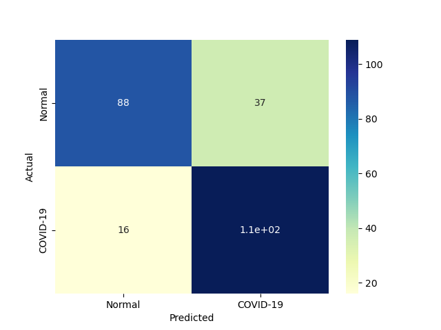 |
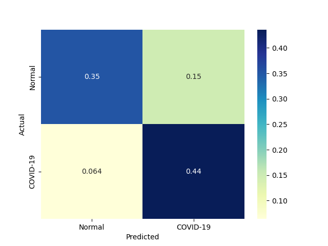 |
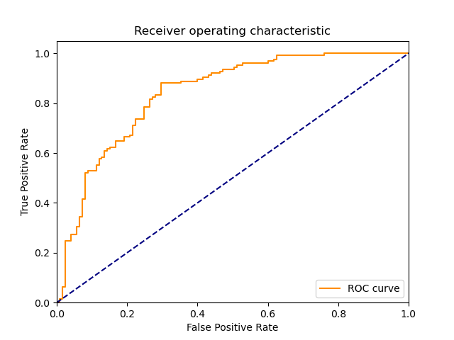 |
| 7 |
LP |
Linear perceptron classifier |
0.019516 |
0.003906 |
112 |
77 |
48 |
13 |
0.896 |
0.616 |
0.700000 |
0.756 |
0.244 |
0.785965 |
1.099619 |
40.273851 |
201.243866 |
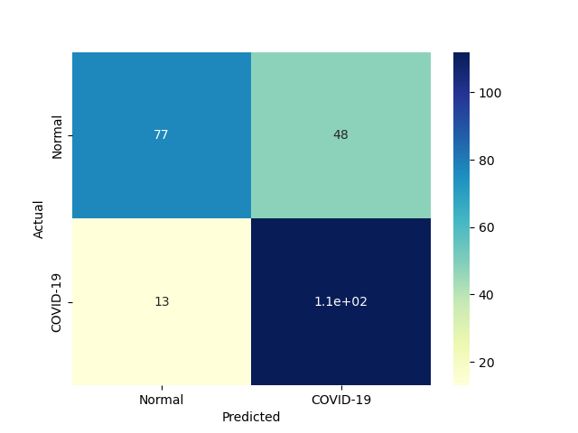 |
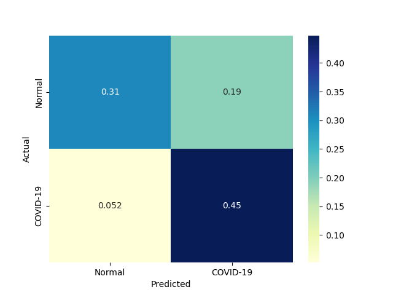 |
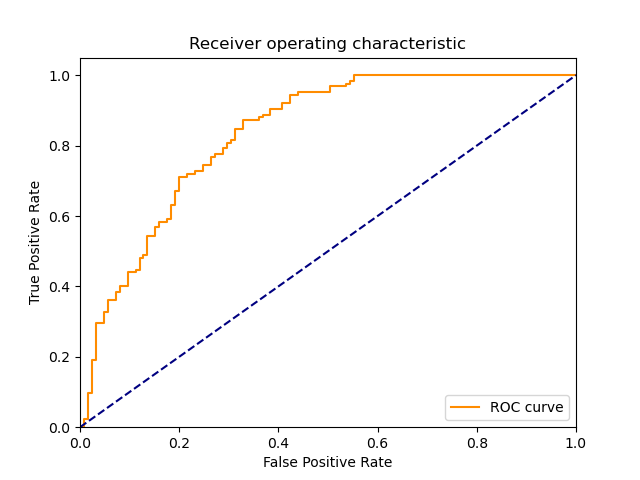 |
| 6 |
NonLinearSVM |
Non Linear Support Vector Classification |
0.062523 |
0.050764 |
118 |
65 |
60 |
7 |
0.944 |
0.520 |
0.662921 |
0.732 |
0.268 |
0.778878 |
1.048465 |
12.457437 |
15.343018 |
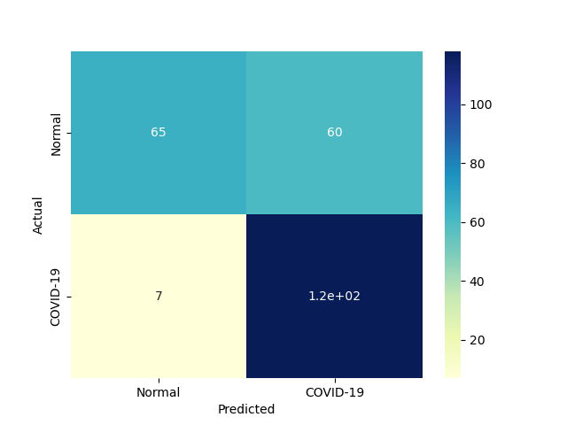 |
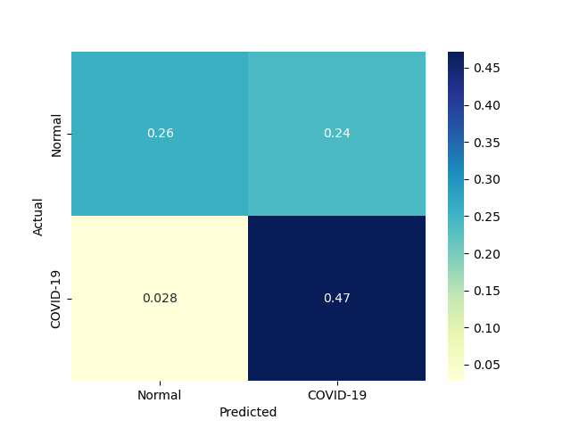 |
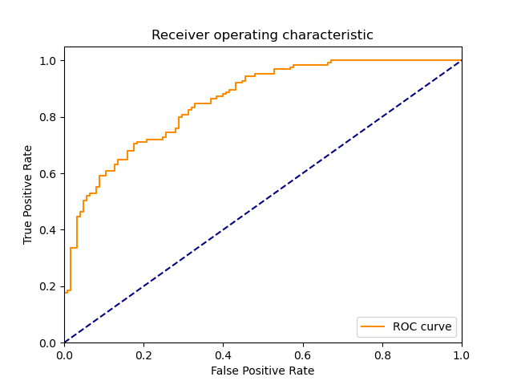 |
| 4 |
KNeighborsClassifier |
Classifier implementing the k-nearest neighbors vote |
0.000000 |
0.026703 |
115 |
51 |
74 |
10 |
0.920 |
0.408 |
0.608466 |
0.664 |
0.336 |
0.732484 |
0.923908 |
inf |
27.430411 |
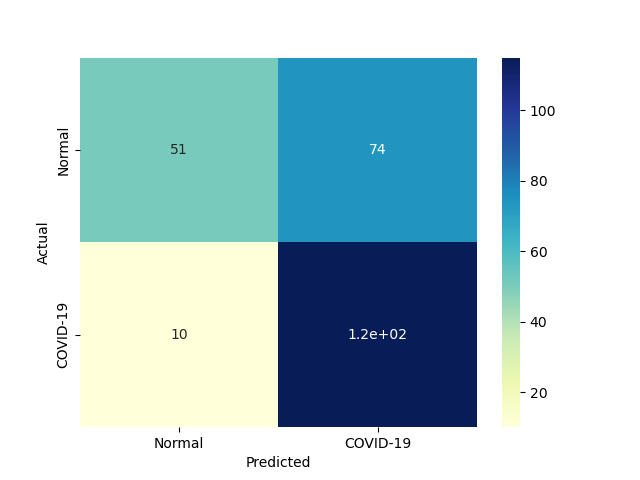 |
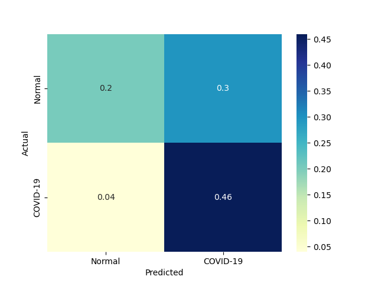 |
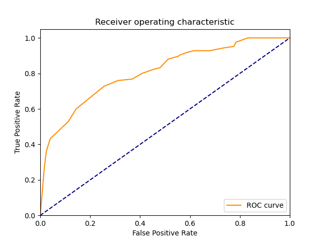 |
| 1 |
RealBoost |
An RealBoost classifier |
225.499892 |
0.000000 |
109 |
53 |
72 |
16 |
0.872 |
0.424 |
0.602210 |
0.648 |
0.352 |
0.712418 |
0.894921 |
0.003159 |
inf |
 |
 |
 |
| 2 |
BernoulliNBC |
Naive Bayes classifier for multivariate Bernoulli models |
0.000000 |
0.015628 |
93 |
68 |
57 |
32 |
0.744 |
0.544 |
0.620000 |
0.644 |
0.356 |
0.676364 |
0.874281 |
inf |
43.279348 |
 |
 |
 |
| 3 |
GaussianNBC |
Gaussian Naive Bayes (GaussianNB) |
0.015625 |
0.000000 |
107 |
27 |
98 |
18 |
0.856 |
0.216 |
0.521951 |
0.536 |
0.464 |
0.648485 |
0.752755 |
41.503664 |
inf |
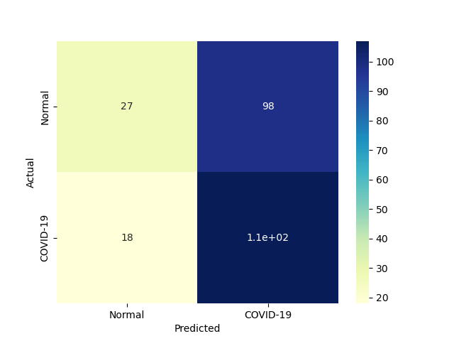 |
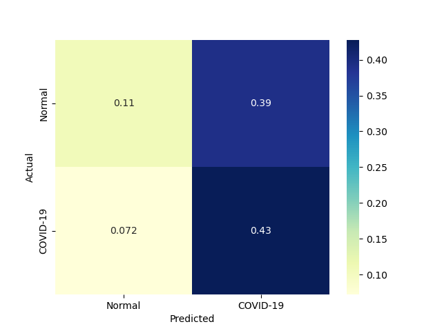 |
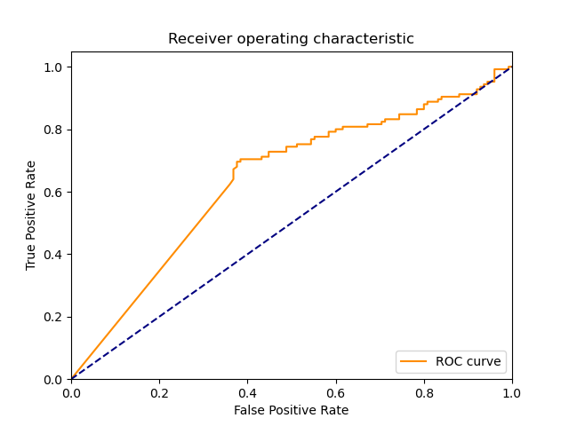 |
| 0 |
DiscreteNBC |
DiscreteNBC |
0.671865 |
0.312478 |
80 |
55 |
70 |
45 |
0.640 |
0.440 |
0.533333 |
0.540 |
0.460 |
0.581818 |
0.723634 |
0.865975 |
1.861947 |
 |
 |
 |
{kind=link}
{kind=link}
{kind=link}
{kind=link}
{kind=link}
{kind=link}
{kind=link}
{kind=link}
{kind=link}
{kind=link}
{kind=link}
{kind=link}
{kind=link}
{kind=link}
{kind=link}